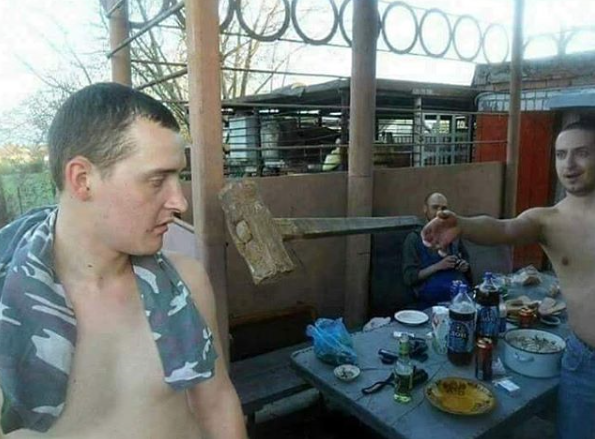
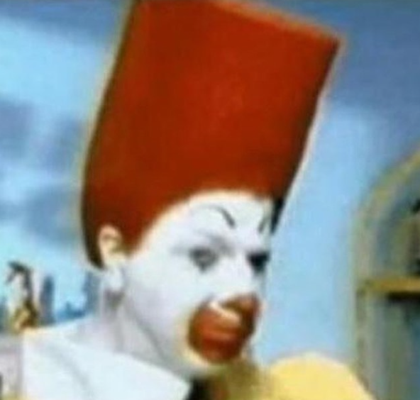

Mp3 og myndir
 

Verkefni 5
Ég var fæddur í Póllandi 27 júni 2003.
Ég flutti til Íslands þegar ég var 3 ára og á heima hérna síðustu 13 ár.
Ég stundaði nám í Hörðuvallaskóla í 10 ár.
Ég æfi MMA með Mjölnir og er búinn að stunda það í 4 ár.
Ég fýla til dæmis lög frá árum svona t.d 1940 - 1978, mér finnast þau bara miklu betri en þessi lög sem að koma út í dag. Eitt af uppáhalds íþróttum sem að mér finnst skemmtilegast að stunda er einmitt Kickboxing og Box, það útskýrir afhverju ég æfði í 4 ár og er enn að fara að æfa.
Já mamma segir líka að ég ætti að bæta við að ég sé "Nerd" þannig......Ég er algjör 'Nerd'.
Eitt af áhugamálonum mínum eru 'Tölvuleikir', ég örugglega spila meira en allir í hópnum okkar samtals..Ég veit það óholt. Ég spila leiki eins og til dæmis, Minecraft, Rainbow Six Siege, Ghost Recon, PayDay2, Outlast II, Garry's Mod, Cities Skylines, Bomber Crew og miklu fleira.
Ég hef líka áhugamál af Boxi og Kickboxi. Ég hef stundað þessa íþrótt í fjögur ár núna og ætla ekki að hætta þangað til ég næ a.m.k 6 árum. Það hefur verið pæling hjá mér að fara á eitthvað mót en ég bara, nennti því ekki enn þegar ég fæ annað tækifæri og ná þessu gulli..
Ég hef líka áhugamál á tölvum, sem að er ein af ástæðum afhverju ég valdi tölvubrautina. En núna snýst líka allt um tölvur þessi ár. Þegar ég klára námið hér í tækniskólanum ætla ég að vinna hjá Advania, örugglega sem síðu forritari eða eitthvað sem að hefur að gera við tölvur. Ég hef líka áhugamál á músik, eins og ég er líka til í að læra gítar eða kannski búa til EDM eða einhver 'Beats' sko. Er alltaf til í að læra eitthvað nýtt.
© 2019 ---